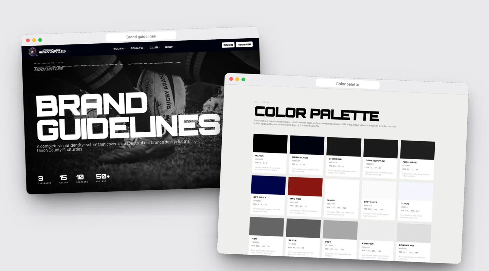
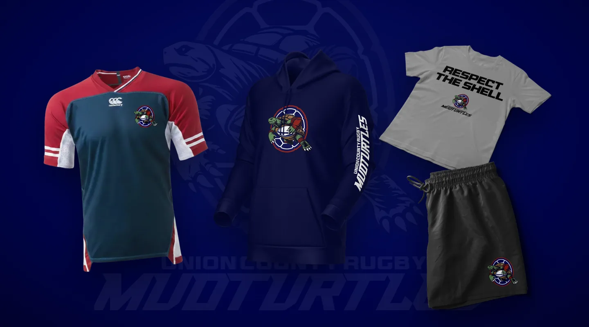
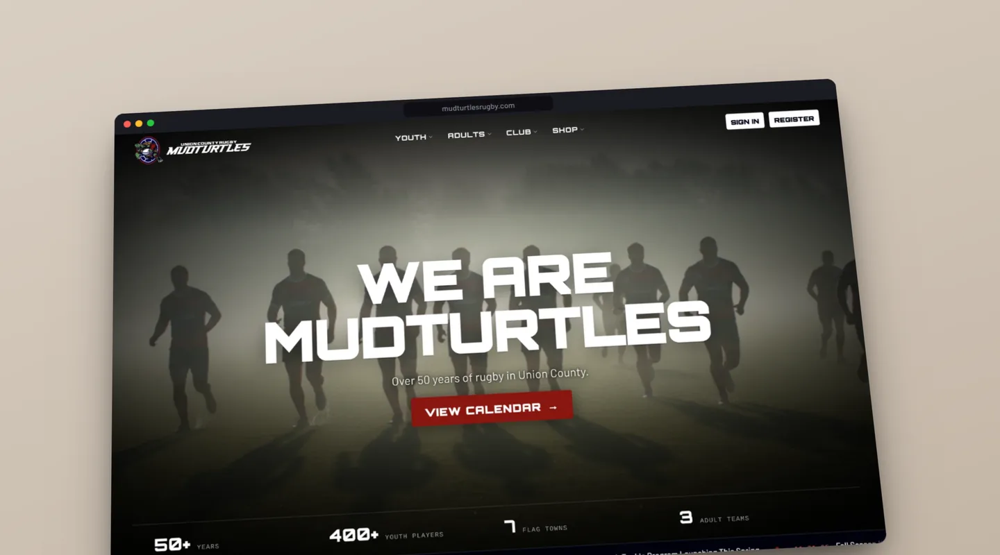
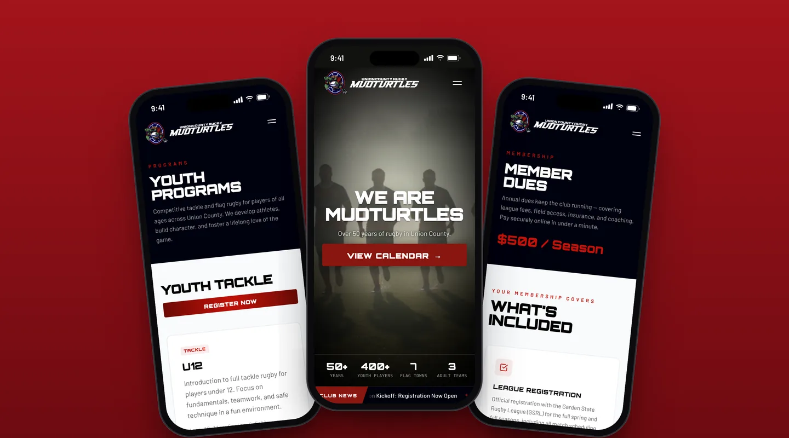
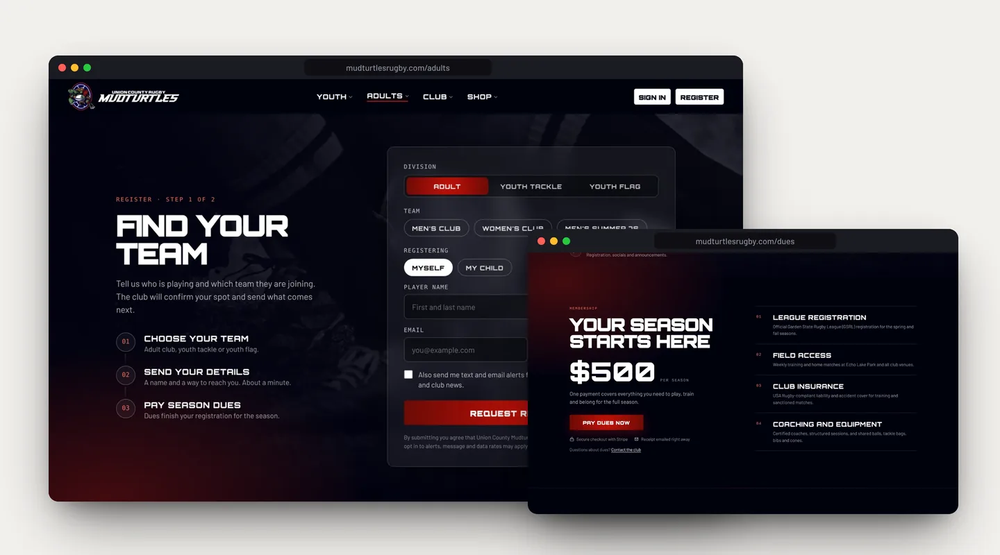
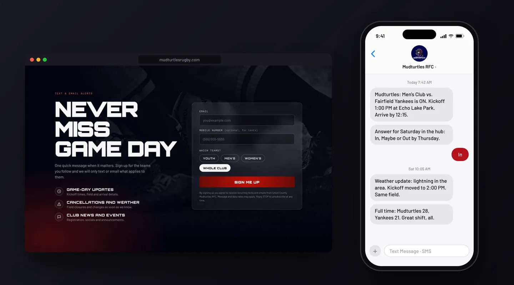
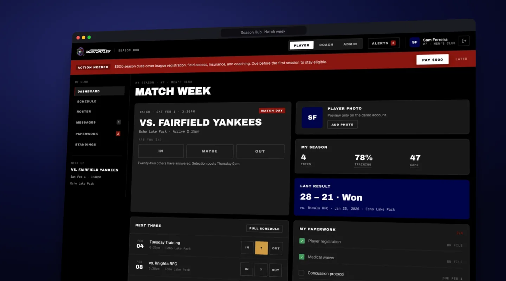
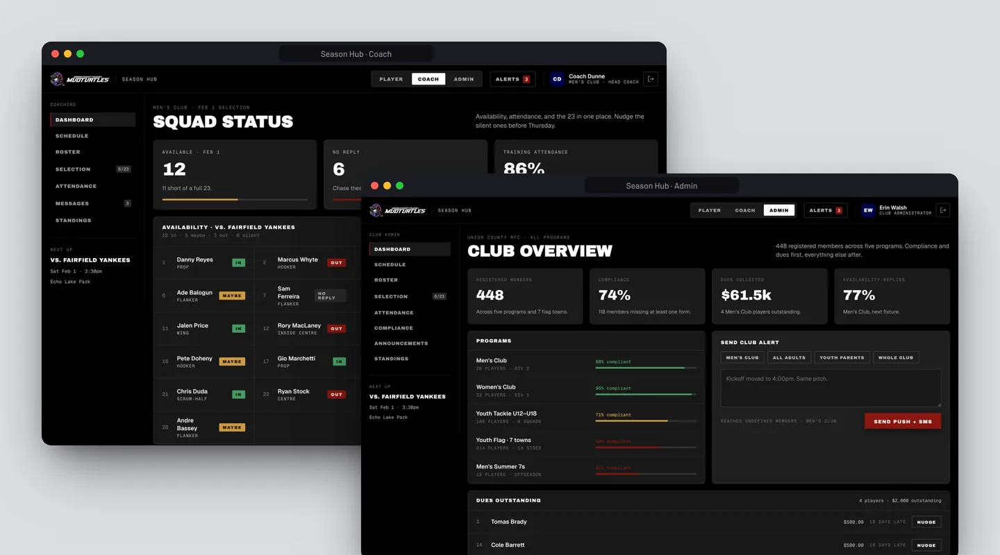
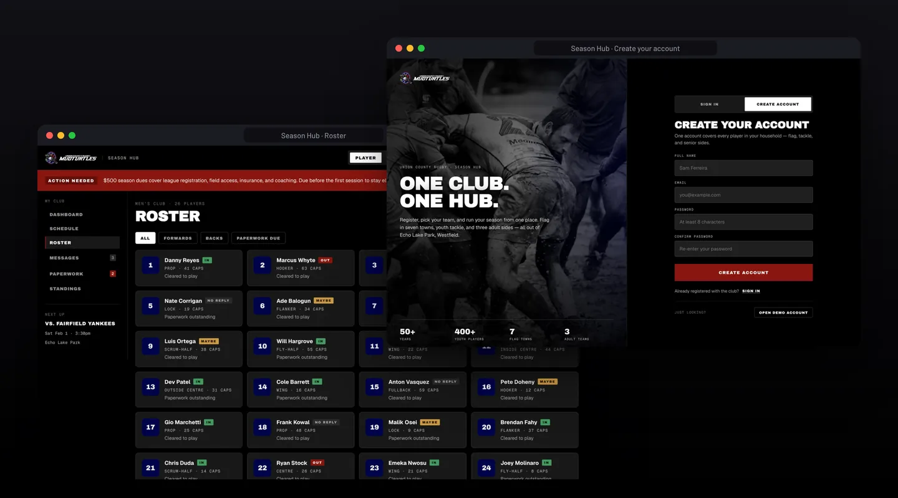

A website, brand system and season hub for Union County Mudturtles RFC, a club with over 50 years of rugby in Union County, New Jersey. Registration, season dues, game-day alerts and Saturday availability now live in one place, under one identity — from the crest on the kit to the button that says you’re in.
An amateur rugby club runs on volunteers, group chats and spreadsheets. For the Mudturtles, joining meant a link to a payment page, game-day changes went out however someone could reach people, and selection depended on a coach chasing availability and waivers by hand. The club had a strong crest and decades of history, but nothing that tied the brand, the website and the season together.
"Working with Finrez was a game-changer for the Union County Mudturtles."
— David Mulewski, TreasurerThe brief: one identity across every surface, a front door for anyone new, and one screen for the question that matters every week — who is playing on Saturday.


We kept the crest — the turtle with the ball is the club — and built a system around it. Headlines moved to Orbitron Black with a matching stroke that makes the face heavier than it ships; body text to Barlow. A navy, red and mud palette, a logo system for dark and light grounds, components, voice and tone, imagery and sponsorship tiers all live in one set of brand guidelines the club’s volunteers can hand to any printer or kit supplier.
The same system runs through the refreshed logo, the jerseys and the club shop, so the identity on the pitch matches the one on the screen.


The website is the front door: who the club is, when it plays and how to join. The home page is built around match day — a slow push-in over the squad, the club’s numbers along the bottom, a news ticker under them, and a league schedule that scrolls sideways as a row of match cards. Youth, adult and alumni programs each get their own page, and every one ends in the same place: a way to sign up.


Joining is now two steps on every page: choose a division and team, say who is playing and how to reach you, then pay season dues through Stripe — with what the dues cover stated plainly next to the price. Game-day updates, cancellations and club news go out by text and email, and sign-ups choose a team, so the parent of a U12 player doesn’t get the men’s side’s weather calls.


Once someone has joined, the Season Hub is where they live. It’s organized around match week: the fixture leads — opponent, kickoff, ground, arrival time — and the availability question sits directly under it as three buttons: In, Maybe, Out. A stated selection deadline and a count of who has already answered do the chasing a coach used to do by hand.
The hub changes with who signs in. Players see their own season, paperwork and dues. Coaches see squad status before selection and can nudge everyone who hasn’t answered at once. Admins see the whole club — registrations by program, compliance, dues collected and outstanding — with a composer that sends an alert by push and SMS.

Brand guidelines, a refreshed logo and kit, a rebuilt website with registration, Stripe dues and team-based alerts, and a Season Hub with real household accounts, private player photos and role-based views for players, coaches and admins. One account covers a family, and from sign-up on, the week comes down to one tap: In.